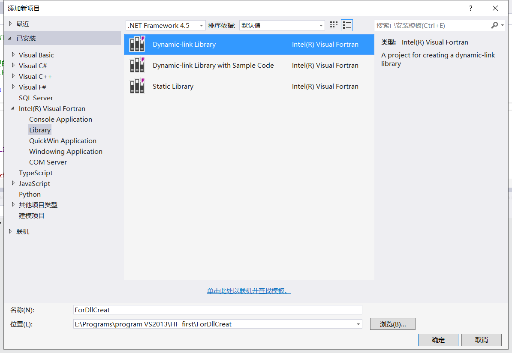

动态链接库(DLL)的生成与调用
Contents：Julia调用Dll
Contributor: 杨月宝
Email:812987139@qq.com
如有错误，请批评指正。
问题的产生与解决过程概述
热流问题数值计算课程的代码是2003年重新整理的Fortran代码。
通过Julia调用教学代码中的函数完成课程大作业。
Step1:生成Fortran dll，尝试用C语言调用dll。
Step2:通过C++调用dll，尝试用Julia调用dll。
Step3:配置VS2013，生成64位dll，使用Julia(64bit)调用dll。
工作环境
Julia 1.7.0-beta2
VS2013 Fortran编译器：Intel.Visual.Fortran.Composer.XE.2013-SP1
VSCode
内容说明
1.使用Fortran生成dll
2.使用VS2013开发人员命令提示查看dll位数
3.使用C++调用dll
4.使用Julia调用dll
1.使用Fortran生成dll
新建一个Fortran动态链接库项目

在Resource Files中添加一个f90文件，并输入如下内容
SUBROUTINE OUTPUT(a, b, sum)
!MS$ ATTRIBUTES DLLEXPORT::OUTPUT
!声明本函数为输出函数
IMPLICIT NONE
INTEGER a, b, sum
sum = a + b
END SUBROUTINE OUTPUTFortran通过下句表示dll输出函数
!MS$ ATTRIBUTES DLLEXPORT::OUTPUT配置编译器属性，选择64位的编译器来生成64位的dll


编译文件后生成项目，就可以在.\x64\Debug文件夹下找到生成的dll文件
使用VS2013开发人员命令提示查看dll位数
VS2013的工具路径在安装目录下
.\Microsoft Visual Studio 12.0\Common7\Tools\Shortcuts选择VS2013开发人员命令提示，可以使用dumpbit命令获得dll信息
dumpbin /headers 路径读取上段生成dll，部分结果：

3.使用C++调用dll
这里采用动态调用方法，根据网上找到的资料和Fortran程序设计课程讲义，我重新整理了C++代码。
这部分代码把那几个冒号去了就是C的代码。
调试或启动exe文件前，请将dll文件放于EXE文件所在的Debug文件夹内。我的是在E:\Programs\program VS2013\HF_first\ForDllCreat\x64\Debug
我的解决方案名和Fortran生成dll的方案同名了，请不要混淆。
#include <stdio.h>
#include <windows.h> // 调用 WINDOWS API 函数所需的头文件
typedef void(*Func)(int *, int *, int *);//定义一个函数指针类型，这个指针类型与被调用函数的输入类型要一一对应
int main()
{
int a = 1, b = 2, sum;
//宏定义函数指针类型
HMODULE hLibrary = ::LoadLibrary(L"ForDLLCreat.dll"); //加载动态库文件，dll名前不加L会报错
if (hLibrary == NULL)
{
printf("No DLL file exist!\n");
return -1;
}
Func dllPro = (Func)::GetProcAddress(hLibrary, "OUTPUT");
//获得 Fortran 导出函数的地址
if (dllPro == NULL)
{
printf("Can not fine the address of the function!\n");
return -2;
}
dllPro(&a, &b, &sum);
printf("%d + %d = %d\n", a, b, sum);
FreeLibrary(hLibrary); //卸载动态库文件
return 0;
}4.使用Julia调用dll
Julia官方文档地址：Calling C and Fortran Code
在开始前，请务必确认Julia的位数与所用dll位数相同，否则会报错dll不是一个可用的Win32应用。
ForDllCreate.dll与ForDllCreate.64.dll内部包含和前文相同的函数，区别是前者是32位，后者是64位。 在64位REPL上载入32位dll会报错。
ERROR: LoadError: could not load library "e:\yyb\HF_first\ForDllCreat.dll"
%1 is not a valid Win32 application.
Stacktrace:
[1] top-level scope
@ e:\yyb\HF_first\test.jl:15
in expression starting at e:\yyb\HF_first\test.jl:15先贴上示例。
#error
a=[1]
b=[2]
c=[0]
ccall((:OUTPUT, ".\\ForDllCreat.dll"),Cvoid,(Ptr{Cint},Ptr{Cint},Ptr{Cint}),pointer_(a),pointer(b),pointer(c))
print(c)
#work
a=[1]
b=[2]
c=[0]
ccall((:OUTPUT, ".\\ForDllCreat64.dll"),Cvoid,(Ptr{Cint},Ptr{Cint},Ptr{Cint}),pointer_from_objref(a)+0x40,pointer_from_objref(b)+0x40,pointer_from_objref(c)+0x40)
print(c)Julia可用通过ccall函数调用C和Fortran编译的dll文件，输入格式为
ccall((function_name, library), returntype, (argtype1, ...), argvalue1, ...)
ccall(function_name, returntype, (argtype1, ...), argvalue1, ...)
ccall(function_pointer, returntype, (argtype1, ...), argvalue1, ...)这里通过第一种调用方法来调用我们编译的ForDllCreat64.dll，
function_name是调用的函数名称。引用时即可以用:OUTPUT表示，也可以用"OUTPUT"表示。
C语言与Fortran输出dll时函数名不变，C++输出函数有命名粉碎，自制dll尽量采用C输出，一定要确定被调用函数的名字才能成功引用。可看此视频
library是被调用dll的路径，用字符串表示。调用C标准库中的函数时，library可以略去。
#调用C标准库函数，不用写引用
t = ccall(:clock, Int32, ())returntype是被调函数的返回类型。Fortran的subroutine返回类型是空，即void，在Julia中表示为Cvoid。数据类型对应的表格可以参考下文表格，也可以查看官方文档。
(argtype1, ...)是一个tuple，与被调函数的输入变量类型要一一对应，类似在C++中定义一个与被调函数输入变量类型一一对应的函数原型。
argvalue1, ... 这部分是输入变量，类型要与(argtype1, ...)一一对应，并与被调函数对应。输入变量不用tuple表示。
不同语言间调用dll，最重要的就是数据类型的匹配。下表是从Julia官方文档中复制的数据类型对应表。更多细节请查看官方文档。

Julia中指针的用法
此处有不明点，请实践时小心处理。
数组类型基本上通过指针传递。
Julia中，指针有两种，Ptr{T}与Ref{T}
Ptr表示的是从变量获得的地址，这类地址是否被销毁不由Julia管理，一般是“危险的”（unsafe)。
Ref是由Julia分配的地址，这类地址的任何更改都由Julia进行，因此是“安全的”。
但是Ref能用的方法似乎不多，目前为止我没学明白这个怎么用。
Julia中获得变量地址的函数有pointer和pointerformobjref，他们获得的指针都是Ptr型的 pointer获得的地址被标明了数据类型，并且总比pointerformobjref的返回值多出一个数据类型的bit数；pointerformobjref获得的地址是无数据类型的。 在官方文档中，pointerfromobjref是对C提供接口的方法(C_Interface)
a="大家好"
b=pointer(a)
c=pointer_from_objref(a)
println(b)
println(c)
println(b-c)
println("a[1]的字节数是",sizeof(typeof(a[1])))#UInt8的字节数是1,但是Char类型的字节数是4由地址获得值的方法是unsafepointerto_objref，这个函数也是官方文档中C接口的函数。
对一个Ptr指针，用pointer获得的指针要减去一个数据类型的bit数才能获得指针内的值。
a=[1.23]
b=pointer(a)
c=pointer_from_objref(a)
d=unsafe_pointer_to_objref(b-0x40)
e=unsafe_pointer_to_objref(c)
println("d=",d)
println("e=",e)